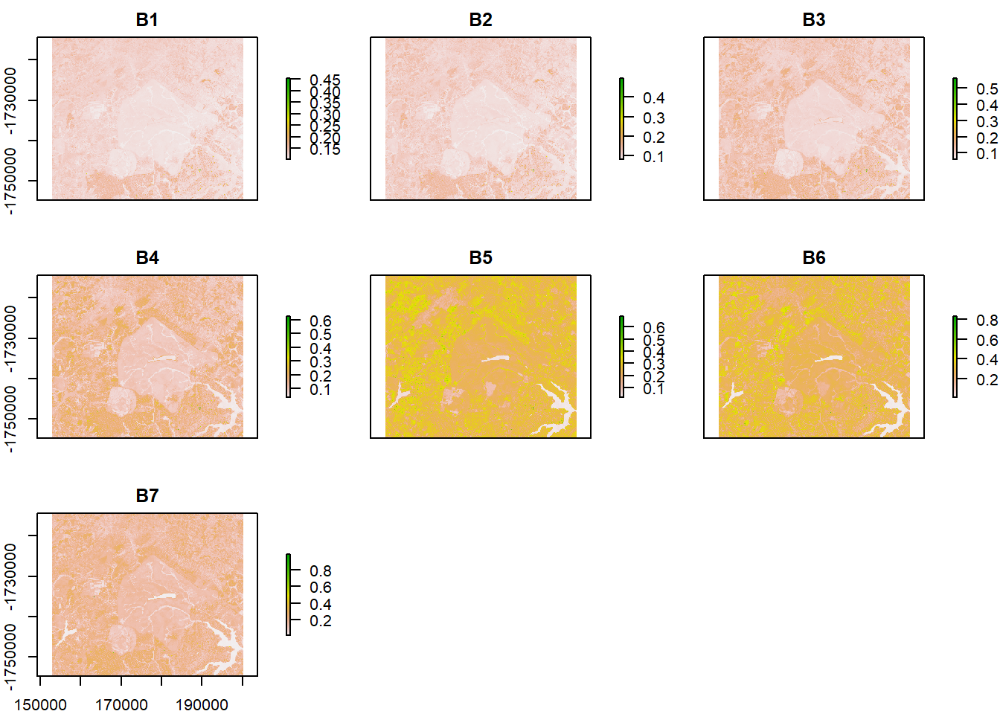
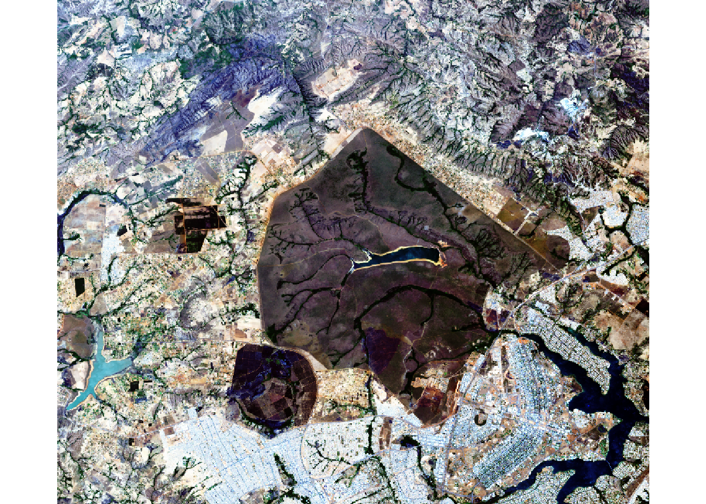
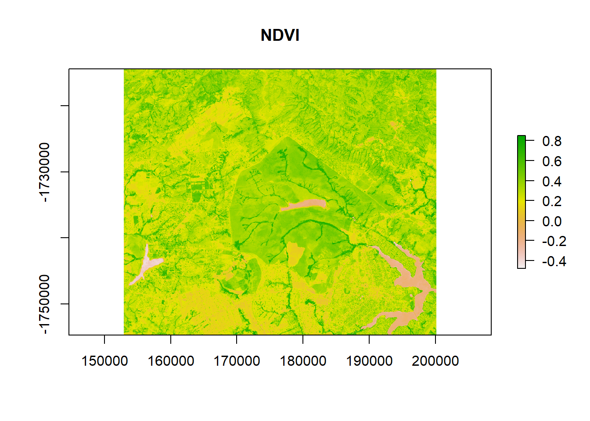
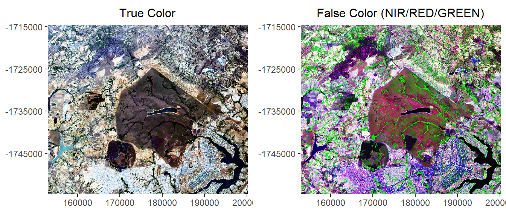

Test
R Markdown
This is an R Markdown document. Markdown is a simple formatting syntax for authoring HTML, PDF, and MS Word documents. For more details on using R Markdown see http://rmarkdown.rstudio.com.
When you click the Knit button a document will be generated that includes both content as well as the output of any embedded R code chunks within the document. You can embed an R code chunk like this:
summary(cars)## speed dist
## Min. : 4.0 Min. : 2.00
## 1st Qu.:12.0 1st Qu.: 26.00
## Median :15.0 Median : 36.00
## Mean :15.4 Mean : 42.98
## 3rd Qu.:19.0 3rd Qu.: 56.00
## Max. :25.0 Max. :120.00Including Plots
You can also embed plots, for example:

Raster Library
Loading the raster file
library(raster)
rast = stack("rasters/raster_parna.tif")
rast## class : RasterStack
## dimensions : 1340, 1573, 2107820, 7 (nrow, ncol, ncell, nlayers)
## resolution : 30, 30 (x, y)
## extent : 152925, 200115, -1754655, -1714455 (xmin, xmax, ymin, ymax)
## crs : +proj=utm +zone=23 +datum=WGS84 +units=m +no_defs +ellps=WGS84 +towgs84=0,0,0
## names : raster_parna.1, raster_parna.2, raster_parna.3, raster_parna.4, raster_parna.5, raster_parna.6, raster_parna.7Plotting the entire stack
names(rast) = paste0("B",1:7)
plot(rast)
RGB plot
plotRGB(rast, r=4, g=3, b=2, stretch='hist')
NDVI
ndvi = (rast[[5]]-rast[[4]])/(rast[[5]]+rast[[4]])
plot(ndvi, main = "NDVI")
Multiplot
library(ggplot2)
library(RStoolbox)
library(gridExtra)
fcolor = ggRGB(rast, 6,5,4, stretch = 'hist')+
theme_bw()+
theme(axis.title.x=element_blank(),
axis.title.y=element_blank(),
panel.grid=element_blank(),
panel.border=element_blank(),
#plot.margin = unit(c(-10,0,-10,0), 'mm'),
plot.title=element_text(hjust = 0.5, size = 12))+
scale_y_continuous(expand=c(0,0))+
scale_x_continuous(expand=c(0,0))+
ggtitle("False Color (NIR/RED/GREEN)")
rgb = ggRGB(rast, 4,3,2, stretch = 'hist')+
theme_bw()+
theme(axis.title.x=element_blank(),
axis.title.y=element_blank(),
panel.grid=element_blank(),
panel.border=element_blank(),
#plot.margin = unit(c(-10,0,-10,0), 'mm'),
plot.title = element_text(hjust = 0.5, size = 12))+
scale_y_continuous(expand=c(0,0))+
scale_x_continuous(expand=c(0,0))+
ggtitle("True Color")
grid.arrange(rgb,fcolor, nrow = 1)